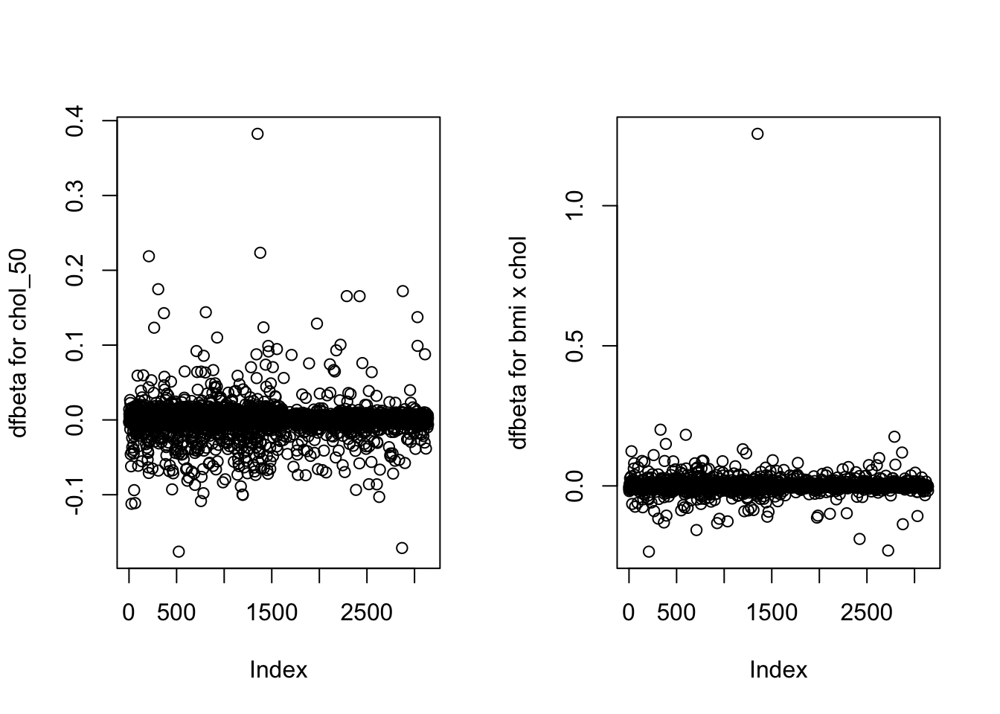

Residuals, leverage, Cook’s distance and all related plots are not the only diagnostic tools you can use in logistic regression. Similarly to linear regression you can compute dfbetas for each coefficient. They have the same interpretation, i.e. they measure the standardized difference between a regression coefficient before and after the removal of each observation in turn. As an example, we go back to the final for chd69 we used earlier and compute dfbetas for chol_50 and bmichol but this time we keep case 12237 who has a very high cholesterol reading (645 mg/dL=16.68 mmol/L). The figure below shows that this observation has the highest dfbeta on the two plots. It’s particularly extreme for bmichol, meaning that this leverage point was particularly influential on this parameter.
R code and output
Code
wcgs <-read.csv("wcgs.csv")wcgs<-data.frame(wcgs)# centre variables (use wcgs again)wcgs$age_10<-(wcgs$age-mean(wcgs$age))/10wcgs$bmi_10<-(wcgs$bmi-mean(wcgs$bmi))/10wcgs$sbp_50<-(wcgs$sbp-mean(wcgs$sbp))/50wcgs$chol_50<-(wcgs$chol-mean(wcgs$chol,na.rm=T))/50myvars <-c("id","chd69", "age", "bmi", "chol", "sbp", "smoke", "dibpat","age_10", "bmi_10", "chol_50", "sbp_50")wcgs3 <- wcgs[myvars]wcgs3cc<-na.omit(wcgs3) # here case with chol=645 is kept, missing deleted# 3142x 12wcgs3cc$bmichol<-wcgs3cc$bmi_10*wcgs3cc$chol_50wcgs3cc$bmisbp<-wcgs3cc$bmi_10*wcgs3cc$sbp_50out5<-glm(chd69 ~ age_10 + chol_50 + sbp_50 + bmi_10 + smoke + dibpat + bmichol + bmisbp, family=binomial, data=wcgs3cc)#summary(out5)dfbetas<-dfbetas(out5) # 3142 x 9par(mfrow=c(1,2))plot(dfbetas[,3], ylab="dfbeta for chol_50")plot(dfbetas[,8], ylab="dfbeta for bmi x chol")

Stata code and output
Code
clearuse wcgs.dtagen age10=(age-46.27869)/10 gen bmi10=(bmi-24.51837)/10 gen chol50=(chol-226.3724)/50 gen sbp50=(sbp-128.6328)/50 gen bmichol=bmi10*chol50gen bmisbp=bmi10*sbp50** remove missingdropifmissing(chd69) | missing(bmi) | missing(age) | missing(sbp) | missing(smoke) | missing(chol) | missing(dibpat) ** n=3142 observationslogistic chd69 age10 chol50 sbp50 bmi10 smoke dibpat bmichol bmisbp, coef ldfbetadesc** Stata has created dfbetafor each coefficientgenindex=_nscatter DFchol50 index, name(temp1) mlab(id)scatter DFbmicho index, name(temp2) mlab(id)graphcombine temp1 temp2** the figure is not displayed (Mardown compatibility with Stata)** but you will see it when running the code## (12 missingvalues generated)## ## ## (12 missingvalues generated)## ## ## (12 observations deleted)## ## ## Logistic regression Number ofobs = 3,142## LR chi2(8) = 200.57## Prob > chi2 = 0.0000## Log likelihood = -789.31393 Pseudo R2 = 0.1127## ## ------------------------------------------------------------------------------## chd69 | Coefficient Std. err. z P>|z| [95% conf. interval]## -------------+----------------------------------------------------------------## age10 | .5914968 .1200155 4.93 0.000 .3562708 .8267229## chol50 | .5948924 .0766472 7.76 0.000 .4446667 .7451181## sbp50 | 1.009179 .2065092 4.89 0.000 .6044289 1.41393## bmi10 | 1.010223 .3009453 3.36 0.001 .4203815 1.600065## smoke | .5947879 .1406769 4.23 0.000 .3190663 .8705096## dibpat | .7221468 .1448671 4.98 0.000 .4382124 1.006081## bmichol | -.6920673 .2439215 -2.84 0.005 -1.170145 -.21399## bmisbp | -1.395698 .6280649 -2.22 0.026 -2.626683 -.1647136## _cons | -3.411468 .1501942 -22.71 0.000 -3.705844 -3.117093## ------------------------------------------------------------------------------## ## command ldfbeta is unrecognized## r(199);## ## r(199);
It’s worth noting that the Cook’s distance and leverage would have identified this case as well (Cook’s D=.107, leverage=0.297 in R), so Vittinghof et al. (2012) were right to remove this observation from their analysis. Note that dfbetas are obtained via the command ldfbeta in Stata, this is slightly different from the code used for the linear model. You may also find other diagnostic tools in your favourite software, we let you explore this further. We have presented here the ones that are more commonly used and readily available in all statistical packages. We will end this paragraph by saying that multicollinearity can occur in logistic regression for the same reason as in the linear model. VIF and various other indicators can be obtained by installing collin in Stata (i.e. type net install collin) and running it. A generalised version of the concept called (GVIF) is available in R via the library car. The interpretation is the same as in linear regression so we will not illustrated its use in this context.
Checking linearity
Categorising
One of the logistic model assumption is linearity on the log-odds scale and this should be checked. Unlike linear regression, we cannot really use the Pearson or deviance residuals and examine whether some structure remains there and scatter plots are not meaningful for a binary endpoint. There are several ways you can check this assumption and, perhaps, the most common one consists of creating categories for a particular predictor of interest. This is the logic we followed in week 9 where agec representing decades of age was used instead of age both in a \(2\times k\) table and a logistic model. If linearity is met, you expect to find a regular increase or decrease in the coefficient with each additional decade. There are obvious disadvantages with this approach: first, the choice of the categories is not obvious; second, categorising may result in small numbers in some categories for which it’s difficult to conclude anything; third, it may have an impact on the interpretation and in some cases can even mask existing structures.
Using polynomials
An important outcome from a hospital resources point of view is whether or not a newborn baby is admitted to neonatal intensive care. The dataset birth records information on 141 babies including the response variable, i,e admittance to neonatal intensive care (admin_nc coded on 0/1 with 0=no'' and 1=yes’’), weight in kg (weight) and a bunch of other predictors. A boxplot of weight by admin_nc (omitted) shows that babies with admit.nc=1 tend to have lower birthweights. A simple logistic shows a very significant effect of weight with \(\hat\beta_1=-1.64\), \(p=7.7e-5\) meaning that the probability of admission to neonatal intensive care decreases with increasing birthweight.
R code and output
Code
birth <-read.csv("birth.csv")birth<-data.frame(birth)model1 <-glm(admit.nc ~ weight, family=binomial, data=birth)summary(model1)## ## Call:## glm(formula = admit.nc ~ weight, family = binomial, data = birth)## ## Coefficients:## Estimate Std. Error z value Pr(>|z|) ## (Intercept) 3.8878 1.2865 3.022 0.00251 ** ## weight -1.6394 0.4147 -3.953 7.72e-05 ***## ---## Signif. codes: 0 '***' 0.001 '**' 0.01 '*' 0.05 '.' 0.1 ' ' 1## ## (Dispersion parameter for binomial family taken to be 1)## ## Null deviance: 151.03 on 140 degrees of freedom## Residual deviance: 129.88 on 139 degrees of freedom## AIC: 133.88## ## Number of Fisher Scoring iterations: 4
Stata code and output
Code
use birth.dtalogistic admitnc weight, coef** OR for a 0.5 kg increase inweightdisp exp(-1.64*0.5)lincom 0.5*weight, or## Logistic regression Number ofobs = 141## LR chi2(1) = 21.15## Prob > chi2 = 0.0000## Log likelihood = -64.938259 Pseudo R2 = 0.1401## ## ------------------------------------------------------------------------------## admitnc | Coefficient Std. err. z P>|z| [95% conf. interval]## -------------+----------------------------------------------------------------## weight | -1.639373 .4147598 -3.95 0.000 -2.452287 -.8264585## _cons | 3.887806 1.286577 3.02 0.003 1.366161 6.409451## ------------------------------------------------------------------------------## ## .44043165## ## ## ( 1) .5*[admitnc]weight = 0## ## ------------------------------------------------------------------------------## admitnc | Odds ratio Std. err. z P>|z| [95% conf. interval]## -------------+----------------------------------------------------------------## (1) | .4405698 .0913653 -3.95 0.000 .2934219 .6615106## ------------------------------------------------------------------------------
We can interpret the output in terms of OR but we need to choose a meaningful weight increase of, say, 500g=0.5kg, yielding \(OR=\exp(-1.64*0.5)=0.44\). So an increase in birthweight of 500g decreases the odds of admittance to neonatal intensive care by \(66\%\) (assuming that the model is correct). Fitted and smoothed (spline) curves are plotted below.
R code
Code
plot(admit.nc~weight,data=birth)lines(smooth.spline(birth$admit.nc~birth$weight,df=5))# NB: smooth.spline (fits a smoothing spline to the supplied data)lines(fitted(model1)[order(birth$weight)]~sort(birth$weight),lty=2,col="red")legend("bottomleft",legend=c("spline","fitted - linear"),lty=1:2, cex=0.8,col=c("black","red"))
Stata code and output (with a slightly different smoother)
Code
clearuse birth.dtasortweightlogistic admitnc weightpredict proba, prgraphtwoway (lpoly admitnc weight, degree(1) kernel(epan2) bwidth(0.8))(line proba weight) (scatter admitnc weight)** the figure is not displayed (Mardown compatibility with Stata)** but you will see it when running the code## Logistic regression Number ofobs = 141## LR chi2(1) = 21.15## Prob > chi2 = 0.0000## Log likelihood = -64.938259 Pseudo R2 = 0.1401## ## ------------------------------------------------------------------------------## admitnc | Odds ratio Std. err. z P>|z| [95% conf. interval]## -------------+----------------------------------------------------------------## weight | .1941017 .0805056 -3.95 0.000 .0860964 .4375963## _cons | 48.80371 62.78974 3.02 0.003 3.920273 607.5603## ------------------------------------------------------------------------------## Note: _consestimates baseline odds.
It’s clear that the fitted curve doesn’t quite get the curvature that we see in the smoothing spline; this means that the effect of birthweight on the probability of admittance to intensive care is not well captured by this simple model. To get better explanation, we try a quadratic polynomial of birthweight, i.e. fit the model \(\log(p/(1-p))=\beta_0+\beta_1 weight+\beta_2 weight^2)\) to the data.
R code
Code
model2 <-glm(admit.nc ~ weight +I(weight^2), family=binomial,data=birth)plot(admit.nc~weight,data=birth)lines(smooth.spline(birth$admit.nc~birth$weight,df=5))# NB: smooth.spline (fits a smoothing spline to the supplied data)lines(fitted(model2)[order(birth$weight)]~sort(birth$weight),lty=2,col="red")legend("bottomleft",legend=c("spline","fitted - quad"),lty=1:2, cex=0.7,col=c("black","red"))
Stata code and output (with a slighly different smoother)
Code
clearuse birth.dtasortweightgen weight2=weight^2logistic admitnc weight weight2predict proba, prgraphtwoway (lpoly admitnc weight, degree(1) kernel(epan2) bwidth(0.8))(line proba weight) (scatter admitnc weight)** the figure is not displayed (Mardown compatibility with Stata)** but you will see it when running the code## Logistic regression Number ofobs = 141## LR chi2(2) = 26.59## Prob > chi2 = 0.0000## Log likelihood = -62.221059 Pseudo R2 = 0.1760## ## ------------------------------------------------------------------------------## admitnc | Odds ratio Std. err. z P>|z| [95% conf. interval]## -------------+----------------------------------------------------------------## weight | .000023 .0001014 -2.42 0.016 4.02e-09 .1312583## weight2 | 4.317368 2.948764 2.14 0.032 1.132005 16.46607## _cons | 3.90e+07 2.74e+08 2.49 0.013 41.86106 3.64e+13## ------------------------------------------------------------------------------## Note: _consestimates baseline odds.
A much better fit is observed. We can try to fit a cubic polynomial and repeat the procedure. Note that when fitting high order polynomials we may be better off using orthogonal polynomials which results terms that are independent by construction. This can be done using the command \(poly()\) in R but does not affect the fitted curve and global interpretation. Irrespective of the basis you choose for the polynomials, you should always keep all of the lower order terms in the model, even if they are not significant. To decide which model (linear, quadratic or cubic) is better we can use the AIC. We find AIC=133.9, 130.4 and 131.4 respectively, so the quadratic model is better. A similar conclusion would have been reached using BIC (but they don’t always agree). We don’t pursue further the modelling of admin_nc; of course, other predictors could be added that could potentially confound the association with weight but they are extremely unlikely to make the quadratic trend identified earlier disappear.
use birth.dta** various models and AIClogistic admitnc weight, coefestaticgen weight2=weight^2logistic admitnc weight weight2, coefestaticgen weight3=weight^3logistic admitnc weight weight2 weight3, coefestatic## Logistic regression Number ofobs = 141## LR chi2(1) = 21.15## Prob > chi2 = 0.0000## Log likelihood = -64.938259 Pseudo R2 = 0.1401## ## ------------------------------------------------------------------------------## admitnc | Coefficient Std. err. z P>|z| [95% conf. interval]## -------------+----------------------------------------------------------------## weight | -1.639373 .4147598 -3.95 0.000 -2.452287 -.8264585## _cons | 3.887806 1.286577 3.02 0.003 1.366161 6.409451## ------------------------------------------------------------------------------## ## ## Akaike's information criterion and Bayesian information criterion## ## -----------------------------------------------------------------------------## Model | N ll(null) ll(model) df AIC BIC## -------------+---------------------------------------------------------------## . | 141 -75.51468 -64.93826 2 133.8765 139.774## -----------------------------------------------------------------------------## Note: BIC uses N = number of observations. See [R] BIC note.## ## ## ## Logistic regression Number ofobs = 141## LR chi2(2) = 26.59## Prob > chi2 = 0.0000## Log likelihood = -62.221059 Pseudo R2 = 0.1760## ## ------------------------------------------------------------------------------## admitnc | Coefficient Std. err. z P>|z| [95% conf. interval]## -------------+----------------------------------------------------------------## weight | -10.68154 4.413832 -2.42 0.016 -19.33249 -2.030588## weight2 | 1.462646 .6830003 2.14 0.032 .12399 2.801302## _cons | 17.48003 7.013229 2.49 0.013 3.734356 31.22571## ------------------------------------------------------------------------------## ## ## Akaike's information criterion and Bayesian information criterion## ## -----------------------------------------------------------------------------## Model | N ll(null) ll(model) df AIC BIC## -------------+---------------------------------------------------------------## . | 141 -75.51468 -62.22106 3 130.4421 139.2884## -----------------------------------------------------------------------------## Note: BIC uses N = number of observations. See [R] BIC note.## ## ## ## Logistic regression Number ofobs = 141## LR chi2(3) = 27.62## Prob > chi2 = 0.0000## Log likelihood = -61.703968 Pseudo R2 = 0.1829## ## ------------------------------------------------------------------------------## admitnc | Coefficient Std. err. z P>|z| [95% conf. interval]## -------------+----------------------------------------------------------------## weight | -49.2661 41.5909 -1.18 0.236 -130.7828 32.25057## weight2 | 13.67673 13.04288 1.05 0.294 -11.88685 39.24031## weight3 | -1.263134 1.343428 -0.94 0.347 -3.896205 1.369936## _cons | 57.25872 43.52855 1.32 0.188 -28.05567 142.5731## ------------------------------------------------------------------------------## Note: 0 failures and 2 successes completely determined.## ## ## Akaike's information criterion and Bayesian information criterion## ## -----------------------------------------------------------------------------## Model | N ll(null) ll(model) df AIC BIC## -------------+---------------------------------------------------------------## . | 141 -75.51468 -61.70397 4 131.4079 143.203## -----------------------------------------------------------------------------## Note: BIC uses N = number of observations. See [R] BIC note.
Splines or more flexible models
The truth is that we were lucky that a quadratic polynomial fit could capture so well the effect of weight on the probability of admission to neonatal intensive care. More often than not, we need more flexible models. Building on what we did in week 7, we could fit restricted cubic splines or fractional polynomials. To illustrate their use here, let’s consider the medcare data where a public insurance program called medcare collected information on 4406 individuals, aged 66 and over. The objective is to determine what factors can impact poor heath represented here by healthpoor (0=average health, 1=poor). Potential predictors are available including age, ofp the number of physician office visits, male (0=female, 1=male), married (0=no, 1=yes), years of education (school). Age is obviously an important predictor, so for sake of simplicity, we consider a model with a single continuous covariate (age) through the standard specification \(\log(p/(1-p))=\beta_0+\beta_1 age\)) where \(p\) is the probability that healthpoor=1 given age. One way to generalise this function is to add terms for restricted cubic splines (RCS), Say we are interested in a model with with 4 knots, we need to add two terms \(S_2(age)\) and \(S_3(age)\) yielding:
\[\log(\frac{p}{1-p})=\beta_0+\beta_1 age+\beta_2S_2(age)+\beta_3S_3(age),\] with the usual convention that \(S_1(age)=age\). As discussed earlier for the linear case, the exact algebraic formulation of \(S_1\) and \(S_2\) is not important as long as we understand that we fit a smooth curve to the data on the logit scale. The curve is based on cubic polynomials in the middle and linear terms before the first knot and after the last knot, where we have less information. The way to create RCS in R and Stata is the same as before. We need to use logistic instead of regress in Stata to fit the corresponding logistic regression model; also use the command lrm instead of ols from the rms library in R. The R (or Stata) output has the typical format with the age coefficient being diplayed first. The added terms are listed as \(age^\prime\) and \(age^{\prime\prime}\) etc in R whereas Stata lets you choose the names.
R code and output
Code
medcare<-read.csv("medcare.csv")medcare<-data.frame(medcare)require(rms)## Loading required package: rms## Warning in library(package, lib.loc = lib.loc, character.only = TRUE,## logical.return = TRUE, : there is no package called 'rms'medcare$age<-medcare$age*10# assume that age is in years in these data (unlike in the R library)ddist <-datadist(medcare)## Error in datadist(medcare): could not find function "datadist"options(datadist='ddist')model1 <-lrm(healthpoor ~rcs(age,4), data=medcare)## Error in lrm(healthpoor ~ rcs(age, 4), data = medcare): could not find function "lrm"model1## ## Call: glm(formula = admit.nc ~ weight, family = binomial, data = birth)## ## Coefficients:## (Intercept) weight ## 3.888 -1.639 ## ## Degrees of Freedom: 140 Total (i.e. Null); 139 Residual## Null Deviance: 151 ## Residual Deviance: 129.9 AIC: 133.9plot(Predict(model1, age))## Error in Predict(model1, age): could not find function "Predict"anova(model1)## Analysis of Deviance Table## ## Model: binomial, link: logit## ## Response: admit.nc## ## Terms added sequentially (first to last)## ## ## Df Deviance Resid. Df Resid. Dev## NULL 140 151.03## weight 1 21.153 139 129.88# AICsmodel0 <-lrm(healthpoor ~ age, data=medcare)## Error in lrm(healthpoor ~ age, data = medcare): could not find function "lrm"AIC(model0)## Error in eval(expr, envir, enclos): object 'model0' not foundAIC(model1)## [1] 133.8765
Stata code and output
Code
use medcare.dtareplace age=age*10** age in yearsmkspline agespl = age, cubic nknots(4) displayknotslogistic healthpoor agespl*, coeftest agespl2 agespl3 estaticlogistic healthpoor age, coefestatic** plotdrop agespl1 agespl2 agespl3mkspline2 agespl = age, cubic nknots(4)logistic healthpoor agespl*, coefadjustrcspline if age <= 95, custominvlink("xb()") ytitle("log-odds")** the option is necessary to get the plot on the log-odds scale** defalut = proba in Stata. ** the figure is not displayed (Mardown compatibility with Stata)** but you will see it when running the code## (4,406 real changes made)## ## ## | knot1 knot2 knot3 knot4 ## -------------+--------------------------------------------## age | 66 70 76 86 ## ## ## Logistic regression Number ofobs = 4,406## LR chi2(3) = 44.71## Prob > chi2 = 0.0000## Log likelihood = -1644.0085 Pseudo R2 = 0.0134## ## ------------------------------------------------------------------------------## healthpoor | Coefficient Std. err. z P>|z| [95% conf. interval]## -------------+----------------------------------------------------------------## agespl1 | -.036536 .0508291 -0.72 0.472 -.1361593 .0630872## agespl2 | .4449931 .2730339 1.63 0.103 -.0901435 .9801297## agespl3 | -.833504 .5151554 -1.62 0.106 -1.84319 .1761819## _cons | .2433287 3.465927 0.07 0.944 -6.549763 7.03642## ------------------------------------------------------------------------------## ## ## ( 1) [healthpoor]agespl2 = 0## ( 2) [healthpoor]agespl3 = 0## ## chi2( 2) = 2.67## Prob > chi2 = 0.2636## ## ## Akaike's information criterion and Bayesian information criterion## ## -----------------------------------------------------------------------------## Model | N ll(null) ll(model) df AIC BIC## -------------+---------------------------------------------------------------## . | 4,406 -1666.363 -1644.009 4 3296.017 3321.58## -----------------------------------------------------------------------------## Note: BIC uses N = number of observations. See [R] BIC note.## ## ## Logistic regression Number ofobs = 4,406## LR chi2(1) = 42.05## Prob > chi2 = 0.0000## Log likelihood = -1645.3389 Pseudo R2 = 0.0126## ## ------------------------------------------------------------------------------## healthpoor | Coefficient Std. err. z P>|z| [95% conf. interval]## -------------+----------------------------------------------------------------## age | .0441932 .0066896 6.61 0.000 .0310818 .0573046## _cons | -5.240621 .5064129 -10.35 0.000 -6.233172 -4.24807## ------------------------------------------------------------------------------## ## ## Akaike's information criterion and Bayesian information criterion## ## -----------------------------------------------------------------------------## Model | N ll(null) ll(model) df AIC BIC## -------------+---------------------------------------------------------------## . | 4,406 -1666.363 -1645.339 2 3294.678 3307.459## -----------------------------------------------------------------------------## Note: BIC uses N = number of observations. See [R] BIC note.## ## ## command mkspline2 is unrecognized## r(199);## ## r(199);
To interpret the RCS, we don’t look as the coefficients per see but plot the curve and assess whether these additional terms are needed. The plot above displays a rather linear effect of age on the log-odds scale (up to a small part of the curve where there does not seem to be real effect for age 66 to 70). Is it enough to justify the more complex model? Since the difference with simple logistic regression is due to \(S_1\) and \(S_2\) that have been added to the model, we can easily test whether they are actually needed using the anova command in R or test the relevant parameters (i.e. H_0$: \(\beta_2=\beta_3=0\)) in Stata. The corresponding \(p\)-value is \(p=0.26\) providing little evidence that the RCS are necessary. In other words linearity in age is plausible on this data. Another way to look at this is to use the AIC (or BIC) and compare the two values (with/without splines). This will become particularly helpful when more complex models with several splines are fitted and are not necessarily nested. The AIC is 3294.7 for the simple logistic regression model and 3296.0 for the the RCS model. This favours the simpler model because a smaller AIC is preferable. This is in agreement with both the LRT analysis and the visual impression we get from the plot.
Note that we still have to choose the number of knots (often between 3 and 5) and their location, By default we let the software place them but there may be case where you have a better idea, in which case you can modify the command and list where the knots are. This is similar to what we do in linear regression (see week 6 material). We have illustrated the concept of RCS here but you could add fractional polynomials of age like \(\sqrt{age}\) or \(age^2\) instead of \(S_1\) and \(S_2\) and proceed the same way. The plots in the RCS approach may also help find the type of fractional polynomials of potential interest.
Investigation: medcare data
In this activity, we will conduct a more thorough analysis of the medcare date and consider whether linearity is satisfied for the other continuous covariates.
Start by fitting the initial model including male, married, age, school and ofp (model0) and get the corresponding AIC. Do not try to remove the nonsignficant predictors for now.
The age effect is assumed to be linear, now we need to assess whether linearity holds for school and ofp. Fit a model with RCS(4) for both of these covariates (model1). Plot the two splines separately (the command(s) we used for the linear model works here just the same). Are they necessary? Comment on the AIC of this model (compared with model0’s). What would you recommend at this stage?
Note: here you have to plot two splines (ols and school). Stata users have to repeat the same procedure (spline definition and refit) to plot the 2nd spline. Otherwise the 2nd spline is not displayed. Also you need to specify the values for the other variables in the model, e.g. use the sample medians. R-users don’t need to worry because the package does it for you.
There still seems to be some downward curvature in the relationship between school and healthpoor on the log-odds scale. We decide to investigate this further by replacing the RCS in school by a polynomial. Discuss the appropriateness of fitting a quadratic polynomial in school (model 2); use preferably the poly() command in R. NB: you can keep the RCS(4) for ofp as in 2) if need be.
What is the better fitted model based on the AIC (or BIC)?
Is there a way to lower the AIC (or BIC) further? What do suggest we do?
Write your conclusions
Note that in terms of interpretation of the splines, we have the same options as in linear regression. For simplicity, the splines will only be interpreted qualitatively. Present plots and stay away from a more complex quantitative explanation. This is what most researchers would do in pratice. You may have a choice of the scale to present the results. We will stick to the logit scale (where linearity is expressed) to keep it as simple as possible.
We have illustrated the use of RCS (and polynomials) on this example but they are part of suite of techniques you can actually use to make your model more flexible and assess linearity. Other types of splines exist and are particular well developed in R. A common strategy is to use smoothing splines that avoid having to choose knots (they are available via the R library mgcv). They are mentioned here for the sake of completeness. An interesting illustration on how they work can be found in the following optional reading.
[@Wand2012] Using Semiparametric Regression and Parametric Regression Models: How to Use Data to Get the (Right) Answer?.
This reading illustrates how a semiparametric model can be fitted to the data and identify structures that could otherwise have been missed using ad-hoc categorisation. The situation described here is a more complex U-shape that can arise in real data. Note as well that ROC (Receiver Operating Curve) and AUC (Area Under the Curve) are used here to assess the model performance of the model. This part can only be understood after studying the next section, so you may want to study it before returning to the reading.
In some applications, we may be interested in using a logistic regression model as a tool to classify outcomes of observed individuals based on values of measured predictors. After model fitting, we can compute the fitted probabilities \(\hat p_i\) and by using a cutoff decide whether they are predictive of an event or not and compare with the real observations. By doing so, we will determine the sensitivity (i.e. the proportion of events that are well classified), the specificity (i.e. the proportion of no events that are well classified) and their respective complements, the false negative and false positive. The sensitivity and specificity will depend critically on the choice of cutoff probability. In practice, we let this cutoff vary on the (0-1) interval, compute the resulting sensitivity and specificity and draw a plot. Traditionally, it is (1-specificity) that is plotted on the horizontal axis, and sensitivity on the vertical axis. This is called a ROC curve (ROC stands for Receiver Operating Characteristic, which originated in quality control where this technique was first developed). The figure below displays the ROC curve for the final model for chd69 without the outlier (chol=645 mg/dL)
R code and output
Code
library(pROC)## Type 'citation("pROC")' for a citation.## ## Attaching package: 'pROC'## The following objects are masked from 'package:stats':## ## cov, smooth, varwcgs4=wcgs3cc[wcgs3cc$chol <645,]dim(wcgs4)## [1] 3141 14out6<-glm(chd69 ~ age_10 + chol_50 + sbp_50 + bmi_10 + smoke + dibpat + bmichol + bmisbp, family=binomial, data=wcgs4)wcgs4$pred.prob<-fitted(out6)wcgs4$pred.prob<-fitted(out6)roc(wcgs4$chd69,wcgs4$pred.prob, plot=TRUE,ci=TRUE)## Setting levels: control = 0, case = 1## Setting direction: controls < cases
##
## Call:
## roc.default(response = wcgs4$chd69, predictor = wcgs4$pred.prob, ci = TRUE, plot = TRUE)
##
## Data: wcgs4$pred.prob in 2885 controls (wcgs4$chd69 0) < 256 cases (wcgs4$chd69 1).
## Area under the curve: 0.7535
## 95% CI: 0.7243-0.7827 (DeLong)
In general, the more the ROC curve is stretched towards the top left corner, the more accurate the model is. The area under the ROC curve called the AUC (or \(C\)-statistic) provides an overall measure of classification accuracy, with the value of one representing perfect accuracy. The AUC returned here is 0.754, 95% CI=(0.72 ; 0.78) which could be seen as fair. In general, the following categories are considered: 0.5 - 0.6 = no discrimination, 0.6 - 0.7 = poor; 0.7 - 0.8 = fair; 0.8 - 0.8 = good; and 0.9 - 1 = excellent.
The AUC is not the only tool that can be used to assess the performance of a model but it is by far the most common. Alternatives include the Brior score or Somer’s D statistic. An important point must be stressed here: because the data have been used twice (to build the model and to assess its discriminative ability), the AUC or any other statistic are optimistic. They tend to return a slightly better estimate than would have been obtained with new data. This is called optimism bias in the literature. We will see in Week 12 that this (usually small) bias can be corrected using bootstrapping or cross-validation.
11.2 Goodness of fit
Two other checks can be found in the literature to assess the adequacy of a model. The first is a specification test available in Stata through the command linktest direcly after a model fit. This test involves fitting a second model using the right hand since (the linear predictor in the logistic model) called \(\_hat\) and its square called \(\_hatsq\). You expect the first Wald test for \(\_hat\) to be significant if your model can explain the data. If the second test corresponding \(\_hatsq\) is significant further modelling is required. Running this command after fitting the same model examined above indicated no evidence that the quadratic term \(\_hatsq\) is needed (p=0.146), therefore we don’t have evidence of model inadequacy. The test has obvious limitations but is provided as a standard tool in Stata (a R counterpart requires a few lines of code). Another tool is to perform a goodness of fit (GoF) test due to Hosmer and Lemershow. The test works by forming groups of ordered predicted probabilities and comparing observed vs expected frequencies. It’s not clear how many groups should be used although 10 is often used in practice. The test is directly available in Stata via the command lfit, group(10) table. You need to work a bit harder in R to get it or use the ResourcesSelection library.
R code and output
Code
library(ResourceSelection)## Error in library(ResourceSelection): there is no package called 'ResourceSelection'hl<-hoslem.test(x = wcgs4$chd69, y =fitted(out6), g =10)## Error in hoslem.test(x = wcgs4$chd69, y = fitted(out6), g = 10): could not find function "hoslem.test"hl## Error in eval(expr, envir, enclos): object 'hl' not found# syntax: x = outcome, y=predicted values, g = number of groups# observed vs expected can also be listedcbind(hl$observed,hl$expected)## Error in eval(expr, envir, enclos): object 'hl' not foundhl1<-hoslem.test(x = wcgs4$chd69, y =fitted(out6), g =20)## Error in hoslem.test(x = wcgs4$chd69, y = fitted(out6), g = 20): could not find function "hoslem.test"hl1## Error in eval(expr, envir, enclos): object 'hl1' not found# link testwcgs4$linpred<-predict(out6,type="link")wcgs4$linpred2=wcgs4$linpred^2out.link<-glm(chd69 ~ linpred + linpred2, family=binomial, data=wcgs4)summary(out.link)## ## Call:## glm(formula = chd69 ~ linpred + linpred2, family = binomial, ## data = wcgs4)## ## Coefficients:## Estimate Std. Error z value Pr(>|z|) ## (Intercept) -0.39838 0.32305 -1.233 0.218 ## linpred 0.56468 0.30606 1.845 0.065 .## linpred2 -0.10024 0.06889 -1.455 0.146 ## ---## Signif. codes: 0 '***' 0.001 '**' 0.01 '*' 0.05 '.' 0.1 ' ' 1## ## (Dispersion parameter for binomial family taken to be 1)## ## Null deviance: 1774.2 on 3140 degrees of freedom## Residual deviance: 1573.8 on 3138 degrees of freedom## AIC: 1579.8## ## Number of Fisher Scoring iterations: 7
There is no evidence of violation of the goodness of fit assumptions using this procedure (\(p > 0.18\) with either 10 or 20 groups). This GoF test is presented here for the sake of completeness. It’s not always a reliable test and it should be used with caution. In particular, because power of GoF tests increases with sample size, practically irrelevant discrepancies between observed and expected number of events are increasingly likely to cause the rejection of the hypothesis of a good fit in large samples. Calibration plots displaying observed vs predicted probabilities (see week 12() can be used to get a visual impression of how well the model fit. They constitute a reasonable alternative but can also be affected by optimism bias as well.
Summary
The following are the key takeaway messages from this week:
Most diagnostic tools developed for the linear model can be extended to logistic regression
Restricted cubic splines or fractional polynomials provide a way to assess linearity.
AIC can be used to compare non-nested models and decide which model to keep.
ROC curves are a very convenient way to assess the discriminative ability of a model but we need to be aware of optimism bias
Goodness of fit tests are available for binary logistic regression but should only be used with caution.